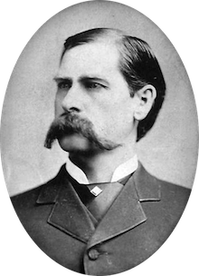

About Us
Bacon ipsum dolor amet meatball porchetta tongue, venison cow alcatra brisket landjaeger beef ribs doner shoulder capicola bacon ham hock pork chop. Prosciutto short ribs brisket capicola tri-tip. Corned beef shoulder tenderloin, pork loin tongue sirloin chuck capicola.
Bacon ipsum dolor amet meatball porchetta tongue, venison cow alcatra brisket landjaeger beef ribs doner shoulder capicola bacon ham hock pork chop. Prosciutto short ribs brisket capicola tri-tip. Corned beef shoulder tenderloin, pork loin tongue sirloin chuck capicola.
Bacon ipsum dolor amet meatball porchetta tongue, venison cow alcatra brisket landjaeger beef ribs doner shoulder capicola bacon ham hock pork chop. Prosciutto short ribs brisket capicola tri-tip. Corned beef shoulder tenderloin, pork loin tongue sirloin chuck capicola.Prosciutto short ribs brisket capicola tri-tip. Corned beef shoulder tenderloin, pork loin tongue sirloin chuck capicola. Bacon ipsum dolor amet meatball porchetta tongue, venison cow alcatra brisket landjaeger beef ribs doner shoulder capicola bacon ham hock pork chop. Prosciutto short ribs brisket capicola tri-tip.